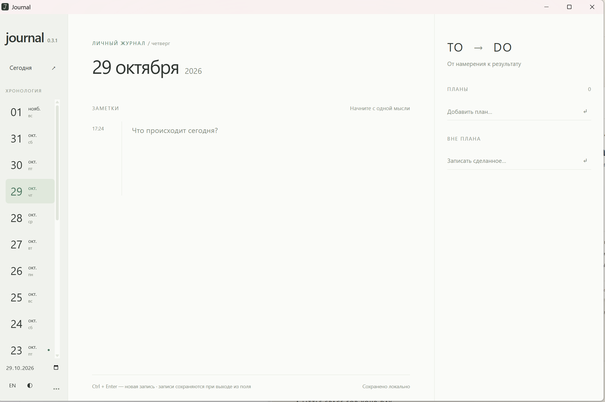

Хронология
День за днём — история ваших мыслей и дел. Возвращайтесь к прошедшему и замечайте, как много уже сделано.
Journal / В своём ритме
Простое пространство для заметок, планов и всего, что удалось сделать.
Замечать. Записывать. Делать. ↓
Пространство для вашего дня
День за днём — история ваших мыслей и дел. Возвращайтесь к прошедшему и замечайте, как много уже сделано.
Мысль приходит на минуту. Сохраните её вместе со временем — короткой строкой или подробной записью.
От намерения к действию. Держите планы рядом с заметками и отмечайте то, что удалось сделать.
Личное остаётся личным
Journal хранит данные локально на вашем устройстве. Без аккаунта и облака. Только вы и ваши записи.
Загрузки
Скоро
Все загрузки